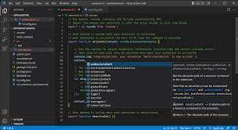
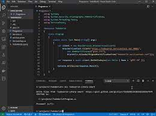

Redenering
Wij wilden iets anders doen dan een website maken vol informatie of een webshop, dus hebben we gekozen om een web game te maken. We zijn al sinds vroeger geobsedeerd door games die je gewoon in je browser kan spelen. We besloten om hier iets mee te gaan doen. Omdat Adobe Flash offline gehaald is en een van ons twee al ervaring had met Unity hebben we besloten om een simpele WebGL game te maken met behulp van Unity. Het spel is gebaseerd op Flappy Bird en het begrip zwaartekracht omdat we allebei natuurkunde interessant vinden.
Wij wilden iets anders doen dan een website maken vol informatie of een webshop, dus hebben we gekozen om een web game te maken. We zijn al sinds vroeger geobsedeerd door games die je gewoon in je browser kan spelen. We besloten om hier iets mee te gaan doen. Omdat Adobe Flash offline gehaald is en een van ons twee al ervaring had met Unity hebben we besloten om een simpele WebGL game te maken met behulp van Unity. Het spel is gebaseerd op Flappy Bird en het begrip zwaartekracht omdat we allebei natuurkunde interessant vinden.

Over het spel
Het doel van het spel is om zo ver mogelijk te komen zonder dood te gaan. Het spel is geinspireerd door onder andere Flappy Bird en Chrome Dinosaur. Het spel zelf is geprogrammeerd in C# met de game engine Unity. We hebben voor Unity gekozen vanwege de gebruiksvriendelijkheid en de programmeertaal C#. Web games ondersteunen geen mobiele versies dus helaas kan je het spel niet spelen op je telefoon. In het spel speel je als een blauw vierkant dat de rode obstakels kan gebruiken om zichzelf verder naar voren te duwen, maar pas op, want de rode obstakels kunnen je ook verder naar achter duwen. Als je uit het beeld raakt stopt het spel en kan je opnieuw spelen. Het vierkant gaat automatisch naar voren en kan je omhoog laten gaan met de spatie balk of door op de muis te klikken.

Hoe hebben wij dit gedaan?
Omdat een web game maken redelijk wat werk vergt hebben we in de eerste les besloten om meteen een taakverdeling te maken, een van ons zou de website maken en de andere zou het spel maken. Het was heel moeilijk om de web game in de website te stoppen aangezien we al redelijk snel in tijdnood kwamen, we hebben de lessen wel goed gebruikt om iets moois neer te zetten maar in het vervolg is het handiger om hier beter op te letten. Het doel was om een speelse layout en kleurencombinatie te kiezen en dit is naar onze mening uiteindelijk gelukt.
Omdat een web game maken redelijk wat werk vergt hebben we in de eerste les besloten om meteen een taakverdeling te maken, een van ons zou de website maken en de andere zou het spel maken. Het was heel moeilijk om de web game in de website te stoppen aangezien we al redelijk snel in tijdnood kwamen, we hebben de lessen wel goed gebruikt om iets moois neer te zetten maar in het vervolg is het handiger om hier beter op te letten. Het doel was om een speelse layout en kleurencombinatie te kiezen en dit is naar onze mening uiteindelijk gelukt.